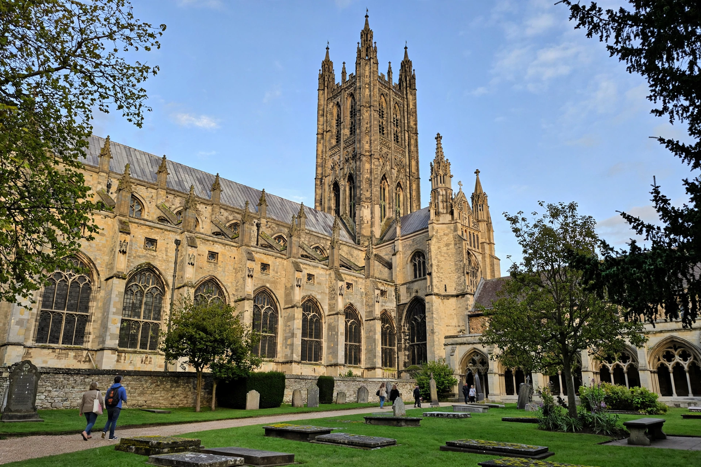

| Archbishop of Canterbury | |
|---|---|
| Style | The Most Reverend and Right Honourable |
| Residence | Lambeth Palace, London; Old Palace, Canterbury |
| Seat | Canterbury Cathedral |
| First holder | Augustine of Canterbury (597) |
| Formation | AD 597 |
| Website | archbishopofcanterbury.org |
The Archbishop of Canterbury is the senior bishop and principal leader of the Church of England, the symbolic head of the worldwide Anglican Communion and the diocesan bishop of the Diocese of Canterbury. The office was founded by Augustine of Canterbury in 597. From the Reformation the archbishop has been appointed by the British monarch on the advice of the prime minister.
The archbishop is ex officio one of the Lords Spiritual in the House of Lords, crowns the monarch at coronations (most recently Charles III in 2023), and has precedence over all other subjects in England except the royal family. Within the Anglican Communion the archbishop is "first among equals", convening the Lambeth Conference and the Primates' Meeting, but holds no jurisdiction over other member churches.
The archbishop's London residence is Lambeth Palace. The Province of Canterbury covers roughly the southern two-thirds of England; the Archbishop of York heads the northern province.
Augustine's mission from Pope Gregory the Great converted King Æthelberht of Kent and established the see at Canterbury. Medieval archbishops often clashed with the Crown: Anselm defended church liberties against William II and Henry I; Thomas Becket was murdered in his cathedral in 1170 by knights of Henry II and swiftly canonised. Stephen Langton helped force the Magna Carta on King John.
At the Reformation, Thomas Cranmer (1533–1555) guided the break with Rome under Henry VIII, compiled the Book of Common Prayer, and was burned at the stake under Mary I. His successor under Elizabeth I, Matthew Parker, consolidated the settlement. Thomas Cromwell, as Henry's vicegerent in spirituals, worked closely with Cranmer — most controversially in the Dissolution of the Monasteries.
Later holders include William Laud, executed in 1645 during the Civil War; William Temple, a leading social reformer; and Rowan Williams (2002–2012), succeeded by Justin Welby (2013), who announced his resignation in November 2024 following criticism over safeguarding failures, stepping down in January 2025.
Since the 1970s the Crown Nominations Commission, representing church and (since 2007) the worldwide Communion, submits two names to the prime minister, who recommends one to the monarch. The archbishop-elect is then confirmed by the cathedral chapter of Canterbury.